1. SE 423: Introduction to MechatronicsLecture 17: Vision Processing, Cameras, Blob DetectionMarius Juston
Wednesday, March 25th, 2026
2. Review – 5-minute partner discussion
Talk to the person next to you and answer these questions.
- What does RGB stand for?
- How many colors are there? Are the lines straight?
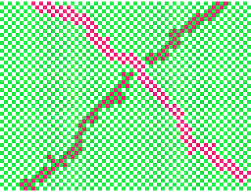
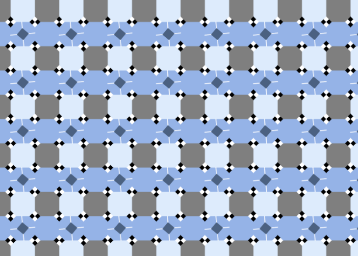
check out https://michaelbach.de/ot/ for a bunch of optical illusions!
3. Reminders
Office Hours:
- Monday: 4-6 PM, Neel
- Tuesday: 11-1 PM, Lakshmi
- Tuesday: 1-3 PM, Samuel
- Tuesday: 2-5 PM, Dan & Marius
Lab: Starting Lab 6 this week. This a 3-week lab!
- Don’t forget to have the Lab LabVIEW application implemented before lab.
Homeworks:
- Check-offs for homework 4 Ex 2 and 3 are due March 31, 5PM (The end of office hours)
- Check-offs for homework 4 Ex 4 are due April 7, 5PM (The end of office hours)
- Remainder of homework 4 due on Gradescope on April 8, 9AM
4. Questions?
Homework, Lab, LabVIEW?
5. Computer Vision
6. Preface
I would HIGHLY recommend you looking at:
- https://visionbook.mit.edu/
- The webpage is a textbook with all the math, background and information for computer vision.
- We will only be doing a tiny portion of this in this lecture (there are whole grad classes for computer vision).
- It is containerized very nicely, has lots of pictures, diagrams. Each section takes 5 minutes to read.
- (also, for more CMOS details look at https://isl.stanford.edu/~abbas/ee392b/lect04.pdf )
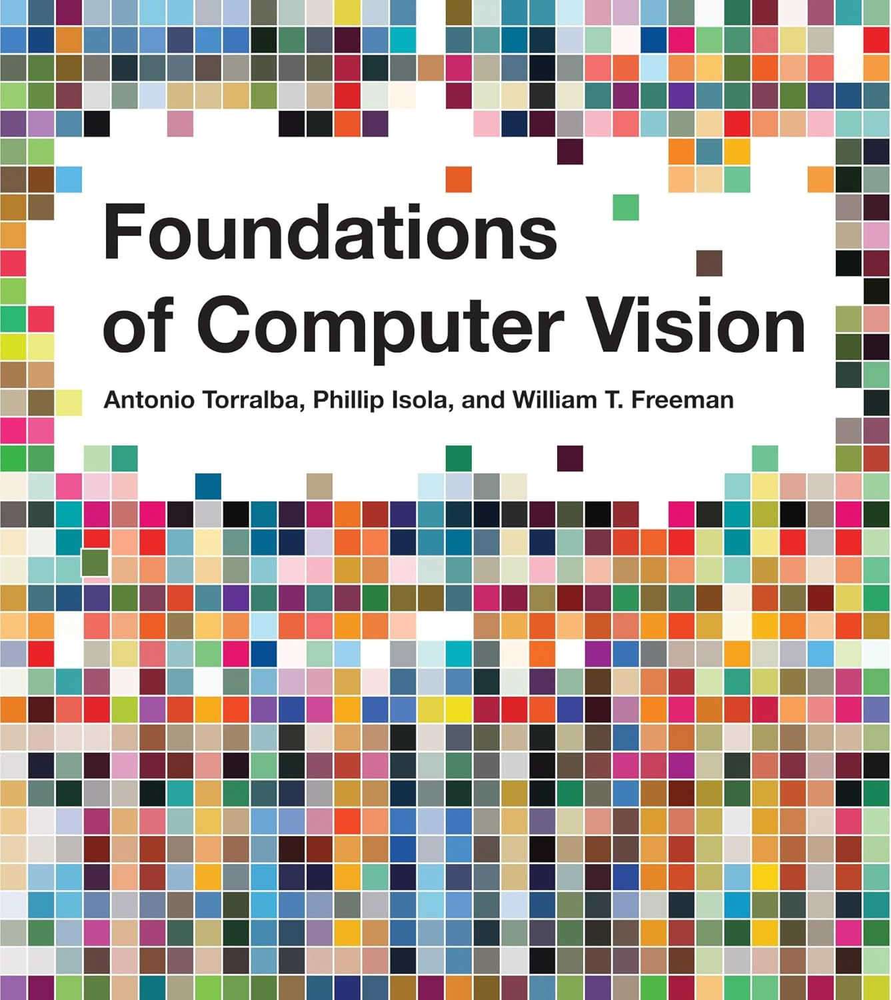
7. Camera Vision
Currently we have the LiDAR working and returning points; however, what kind of data are missing from just the LiDAR?
Color, complex shapes, human vision like data
Vision processing allows a robot to extract rich, high-density data from its environment.
Instead of an array of 228 distances (like our LiDAR), a camera gives us millions of data points per frame (RGB per pixel).
What is the primary drawback of having millions of data points per frame in a real-time mechatronic system?
Computational latency; processing takes time, more memory / bandwidth is required to handle processing of the data!
8. Camera Vision
Is a standard camera an active or a passive sensor?
Passive.
It does not emit energy; it captures ambient light bouncing off objects.
Because it is passive, it is highly vulnerable to environmental changes.
If the sun goes behind a cloud what happens?
The pixel color changes, shadows appears, etc.
How do we build robust code around this?
9. Camera Vision
The main pipeline that we will follow in this class is the following:
Step 1: The CMOS sensor captures photons and converts them to digital arrays.
Step 2: The processor filters the image (e.g., finding specific colors).
Step 3: The algorithm calculates the coordinates of the target (Centroid).
Step 4: The Cascade Control loop turns the coordinates into wheel velocities.
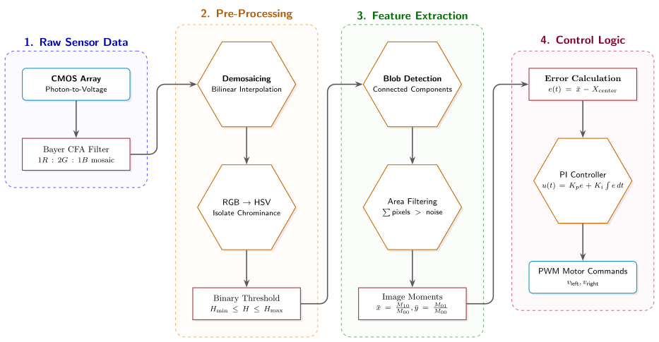
10. CMOS
11. Camera Vision
12. Camera Vision
Most modern robotics vision relies on CMOS (Complementary Metal-Oxide-Semiconductor) sensors.
A CMOS sensor contains a massive 2D grid of microscopic photodiodes.
When photons strike a photodiode, they excite electrons via the photoelectric effect, creating a measurable voltage.
This continuous voltage is sampled and converted into a discrete digital value (usually 0-255 for an 8-bit ADC).
13. Camera Vision
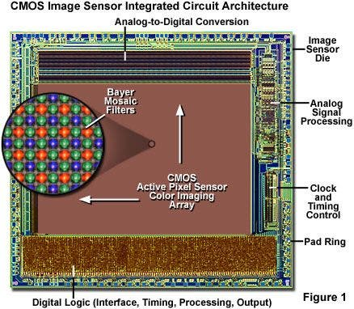
https://evidentscientific.com/en/microscope-resource/knowledge-hub/digital-imaging/cmosimagesensors
https://evidentscientific.com/en/microscope-resource/knowledge-hub/digital-imaging/cmosimagesensors
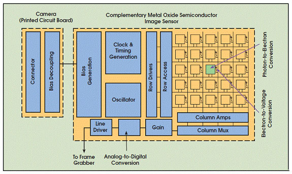
14. Camera Vision
- Readout performed by transferring one row at a time to the column storage capacitors, then reading out the row, one (or more) pixel at a time, using the column decoder and multiplexer
- In many CMOS image sensor architectures, row integration times are staggerred by the row / column readout time (scrolling shutter)
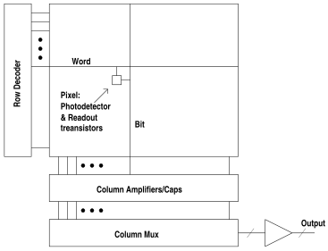
15. Camera Vision
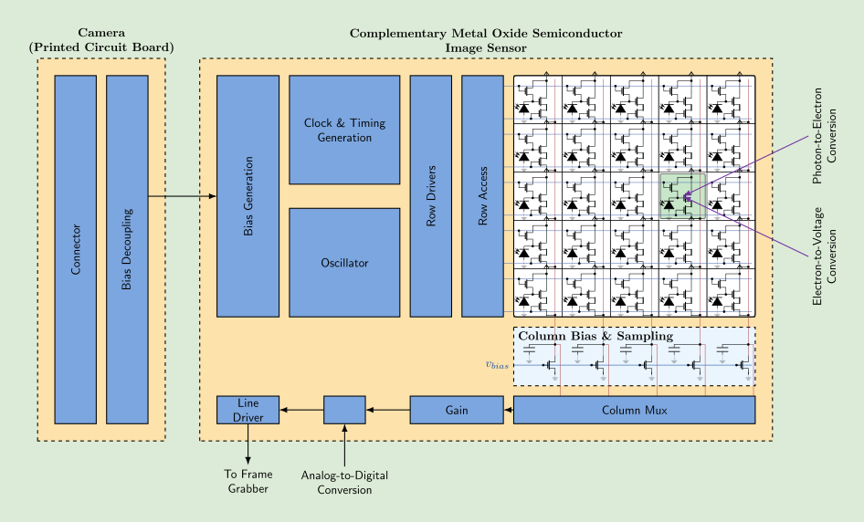
16. Color
17. Camera Vision
18. Camera Vision
The problem with photodiodes is that they only measure the intensity of light (how many photons hit them).
What kind of problem that cause?
They are inherently colorblind; they only produce a grayscale image!
To see a red ball, we need a way to filter out all other wavelengths of light before they hit the photodiode.
How do we make a single sensor array see Red, Green, and Blue simultaneously?
19. Camera Vision
To achieve color vision, a microscopic color filter is placed over each individual photodiode.
This is known as a Color Filter Array (CFA), the most common being the Bayer Filter.
It assigns each pixel to capture only Red, only Green, or only Blue light.
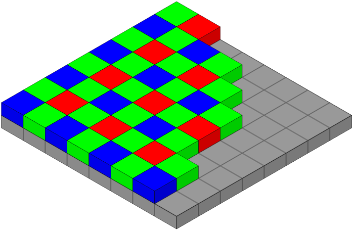
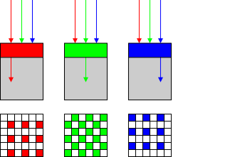
20. Camera Vision
The Bayer format arranges filters in a repeating grid.
What is a problem with filtering color?
We lose information! This is why most scientific instruments (on Mars for example) are in black and white to ensure capturing all the intensities!
Notice anything strange about this ratio?
1 Red : 2 Green : 1 Blue
Why are there twice as many Green pixels as Red or Blue?
21. Camera Vision
We use twice as many green filters because the human eye (specifically our cone cells) is most sensitive to green wavelengths (~550 nm).
By over-sampling green, the camera captures luminance (brightness) detail that matches human perception.
However, our raw array is now a mosaic of single colors.
Pixel (0,0) only knows Red.
How do we get RGB values for every pixel?
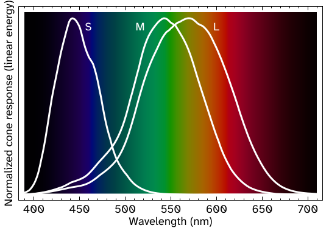
22. Camera Vision
Demosaicing is the mathematical process of guessing the missing color values at each pixel location.
We use surrounding pixels to calculate an average. To find the missing Green value at a Red pixel:
The camera's internal DSP (Digital Signal Processor) usually does this before sending data to the microcontroller.
This simple approach works well in areas with constant color or smooth gradients, but it can cause artifacts such as color bleeding in areas where there are abrupt changes in color or brightness especially noticeable along sharp edges in the image.
Because of this, other demosaicing methods attempt to identify high-contrast edges and only interpolate along these edges, but not across them.
https://en.wikipedia.org/wiki/Color_vision
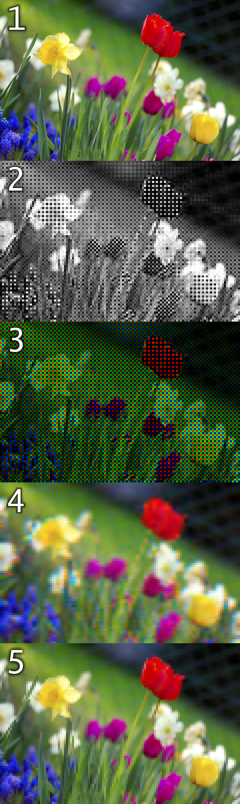
23. Camera Vision
Once demosaiced, every pixel is an array of three values: R, G, B.
RGB is an additive color model used by screens and sensors and each value is represented as an 8-bit value (depends on the ADC of the sensor).
If , what color do we see?
White
If , what color do we see?
Red
RGB is represented as a 3D Cartesian cube, where correspond to Red, Green, and Blue intensities.

24. Camera Vision
Imagine we write code to track a red ball:
if (R > 200 && G < 50 && B < 50) { track(); }
What happens when the robot drives under a shadow?
The total light drops. The pixel might become R=100, G=10, B=10. Our code fails!
In RGB, a change in lighting changes all three variables simultaneously. It couples chrominance (color) with luminance (brightness).
25. Camera Vision
To solve the shadow problem, we transform the RGB cube into a cylinder: The HSV color space.
H = Hue (The actual color type, e.g., Red, Blue).
S = Saturation (How pure the color is, vs. faded white).
V = Value (How bright or dark the color is).
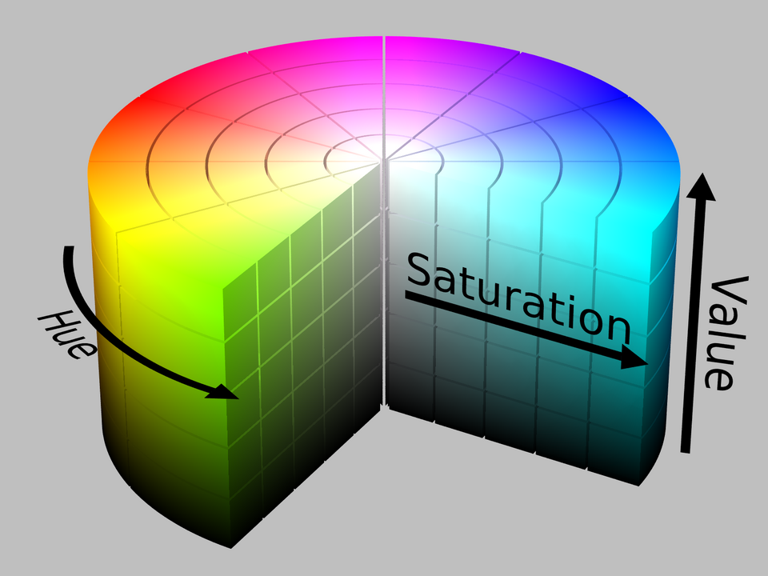
26. Camera Vision
In the HSV cylinder, Hue is an angle from to .
- = Red,
- = Green,
- = Blue.
Why this is brilliant: If a red ball enters a shadow, its Value drops, but its Hue angle remains “exactly” !
This isolates the color from the lighting condition, making our tracking algorithm more robust!
27. Camera Vision
Saturation is the radius (distance from the center axis).
- S=0% is pure gray/white (center).
- S=100% is a pure, vibrant color (edge).
Value is the height of the cylinder (0 to 100%).
- V=0% is pitch black.
- V=100% is fully illuminated.
To track an object, we look for pixels that fall within specific ranges.
28. Camera Vision
To convert from RGB to HSV the conversion is simple.
Let be normalized values in .
29. Camera Vision
Which one looks the nicest?
HSV value V
HSL value L
Original Color
CIELAB L*
30. Camera Vision
While HSL, HSV, and related spaces serve well enough to, for instance, choose a single color, they ignore much of the complexity of color appearance.
Essentially, they trade off perceptual relevance for computation speed.
HSL and HSV are simple transformations of RGB which preserve symmetries in the RGB cube unrelated to human perception.
If we plot the RGB gamut in a more perceptually-uniform space, such as CIELAB, it becomes immediately clear that the red, green, and blue primaries do not have the same lightness or chroma, or evenly spaced hues.
Because HSL and HSV are defined purely with reference to some RGB space, they are not absolute color spaces: to specify a color precisely requires reporting not only HSL or HSV values, but also the characteristics of the RGB space they are based on, including the gamma correction in use.
31. Camera Vision
The CIELAB space is three-dimensional and covers the entire gamut (range) of human color perception.
It is based on the opponent model of human vision, where red and green form an opponent pair and blue and yellow form an opponent pair.
The lightness value, L* (pronounced "L star"), defines black at 0 and white at 100.
The a* axis is relative to the green–red opponent colors, with negative values toward green and positive values toward red.
The b* axis represents the blue–yellow opponents, with negative numbers toward blue and positive toward yellow.
https://en.wikipedia.org/wiki/CIELAB_color_space
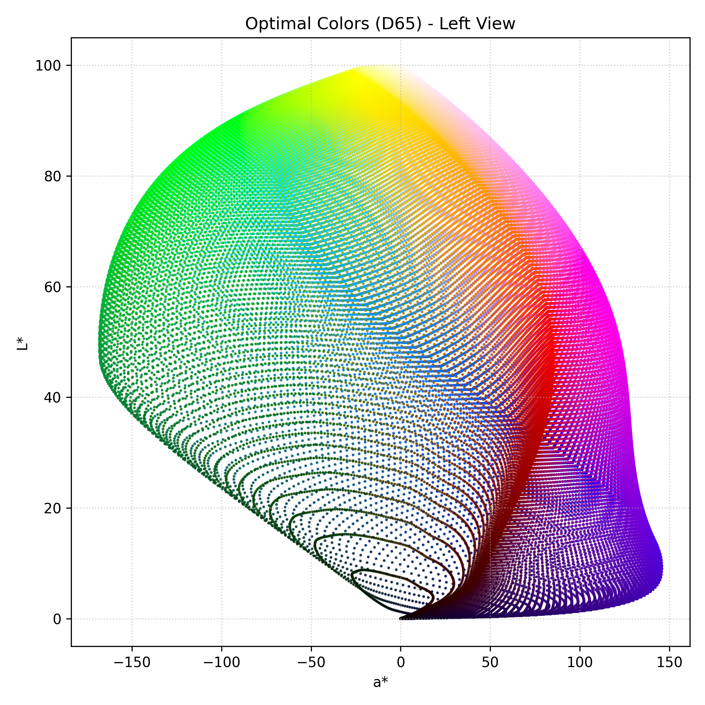
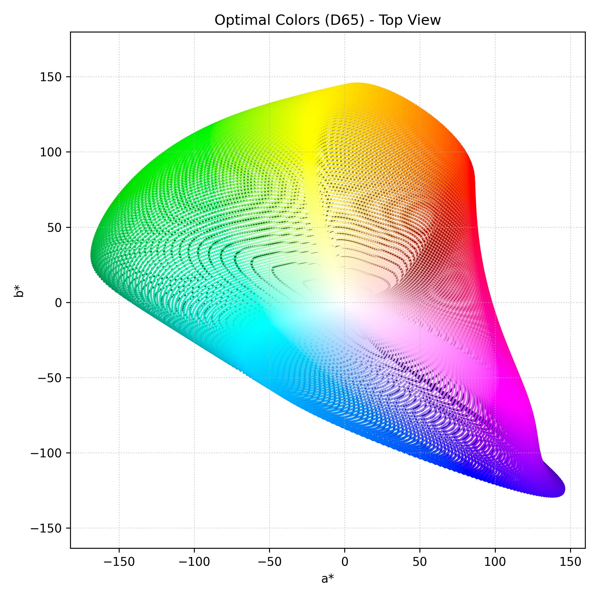
32. Camera Vision
The lightness value, L* in CIELAB is calculated using the cube root of the relative luminance with an offset near black.
This results in an effective power curve with an exponent of approximately 0.43 which represents the human eye's response to light under daylight (photopic) conditions.
The a* and b* axes are unbounded and depending on the reference white they can easily exceed ±150 to cover the human gamut (range).
Nevertheless, software implementations often clamp these values for practical reasons. For instance, if integer math is being used it is common to clamp a* and b* in the range of −128 to 127.
33. Blob detection
34. Camera Vision
35. Camera Vision
Once we convert our image to HSV, we apply a Threshold.
We evaluate at every single pixel: “Does this pixel’s CIELAB fall within my target red range?”
If YES -> Pixel becomes 1 ( Whites)
If NO -> Pixel becomes 0 (Black).
The result is a Binary Mask.
We have thrown away all useless data and kept only the target representation.
Does thresholding tell us exactly where the ball is?
36. Camera Vision
A "Blob" (Binary Large Object) is a contiguous group of connected white pixels in our binary mask.
Blob detection algorithms scan the image to find these groupings and label them as distinct physical objects.
This is known computationally as Connected Component Labeling (CCL).
What simple graph algorithm can you think of could potentially help us?
37. Camera Vision
The simplest implementation of the algorithm for the Connected Components work is as following:
- The algorithm scans the image pixel by pixel (raster scan).
- When it finds a '1', it checks the neighboring pixels (usually 4-connectivity or 8-connectivity).
- If a neighbor is also a '1', it assigns them the same "Label" (e.g., Object A).
- It uses a "Union-Find" data structure to merge labels if two separate groups eventually connect.
Otherwise, you can think of this as doing BFS (Breadth-First-Search) on every pixel! (The best algorithms do not do this exactly, but this is the simples way to explain)
38. Camera Vision
Even with the color filtering, we can still get random glare or noise in the background that will create small fake blobs.
How do we write a rule t ignore these false positives?
Filter blob by Area (total pixel count), filter blob by shape (the more like a circle the more we want to keep it).
If Blob.Area < MIN_THRESHOLD, we discard it.
We only pass the largest valid blob to the next step.
39. Camera Vision
We have found the blob representing our red ball, now where is it?
We need its (X, Y) coordinate in the camera frame to steer the robot. We do this by calculating the Centroid (Center of Mass ) of the blob.
We compute this using Image Moments.
In computer vision, a discrete image moment for a binary image is defined as:
The 0th moment, , sets and :
Because is either 1 or 0, is simply the total sum of white pixels. .
40. Camera Vision
To find the center, we need the 1st order moments, and .
(This is the sum of all the X-coordinates of the white pixels).
(This is the sum of all the Y-coordinates of the white pixels).
These act as our weighted spatial totals.
To find the exact center pixel , we divide the spatial totals by the total area.
41. Camera Vision
Now we have .
Let's say the image is pixels.
The center of the camera is .
If our centroid is at , where is the ball?
It is to the right of the robot.
We calculate the error: pixels.
Given this error, we can pass this as an error to a PI controller to make the robot turn to face the target!
42. Camera Vision
YouTube video: Computer Vision Blob Detection (Marius Juston)